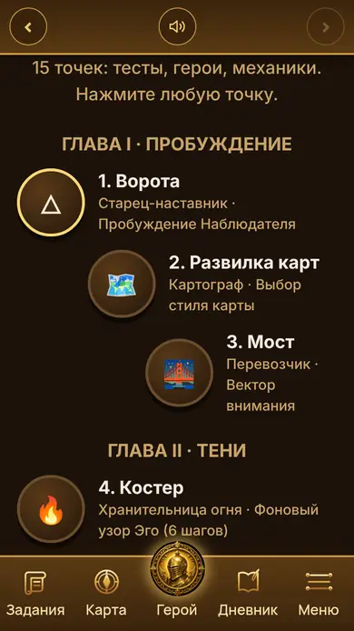
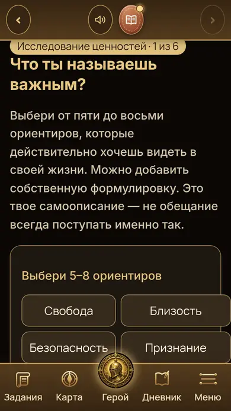
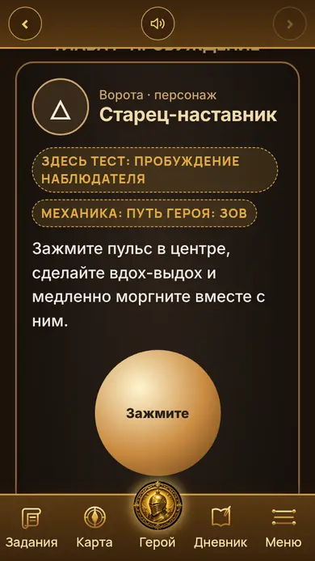
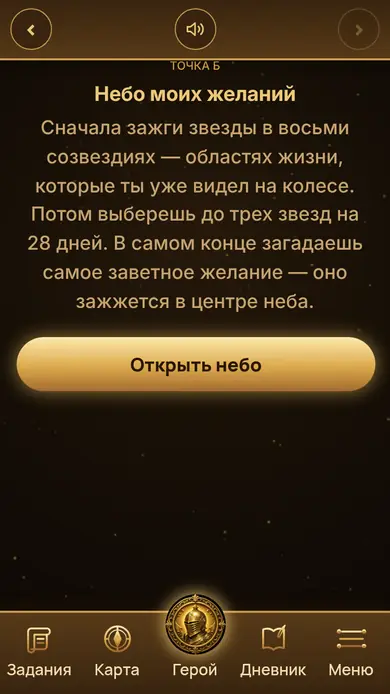

Что ты получишь
Старец и карта пути
Проводник ведет тебя по точкам пути, а ты по ходу создаешь своего героя.
Колесо жизни
Оцениваешь сферы жизни и видишь, где тебе сейчас тепло, а где тесно.
Портрет героя
Сильные стороны и привычный почерк действий, собранные по твоему имени и дате рождения.
Небо желаний
Выбираешь звезды желаний, а потом одно главное, которое по-настоящему твое.
Личная стратегия и 28 дней
Маленькие шаги и ежедневный трекер, чтобы желание не осталось в мыслях.
Дневник и артефакты
Итоги каждого шага собираются в дневнике, а за пройденное ты получаешь артефакты.
Как проходит путь
Знакомство
Создаешь героя, встречаешь Старца, делаешь первые простые упражнения.
Где ты сейчас
Колесо жизни и ценности: что для тебя важно и что хочется изменить.
Чего ты хочешь
Находишь повторяющееся правило, проходишь лабиринт и небо желаний.
Что делать дальше
Личная стратегия, конструктор пути и трекер на 28 дней.
Как это выглядит




Для кого игра
- Хочешь понять, чего хочешь ты сам, а не окружающие.
- Много идей и планов, но не понятно, с чего начать.
- Любишь игры и разбираться в себе в своем темпе.
- Нужен простой план на месяц, а не очередная теория.
Что будет после оплаты
- 1. Ссылка на игру придет на твою почту.
- 2. Игра откроется в браузере телефона, ничего скачивать не нужно.
- 3. Добавь ее на главный экран, и она будет под рукой как обычное приложение.
Вопросы
Сколько это займет?
Путь состоит из 35 коротких шагов. Проходи в своем темпе, останавливайся и возвращайся: прогресс хранится в браузере на твоем устройстве.
Нужно ставить приложение из магазина?
Нет. Игра открывается в браузере телефона, а потом добавляется на главный экран одним нажатием.
Это терапия или диагностика?
Нет. Это авторская игра для самоисследования и планирования. Она не ставит диагнозов и не заменяет помощь специалиста.
Можно пройти на другом устройстве?
Прогресс сохраняется на том устройстве и в том браузере, где ты играешь. Лучше проходить на одном телефоне.
Что будет после 28 дней?
Ты увидишь итоговую карту пути и сможешь вернуться к дневнику, желаниям и стратегии в любой момент.